To create a clocked, edge-triggered, D-type flip-flop, take a clocked edge-triggered SR flip-flop and add an inverter, as shown in Fig. 12.79.
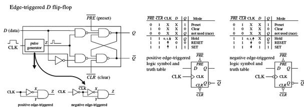
FIGURE 12.79
Figure 12.80 shows a popular edge-triggered D-type flip-flop IC, the 7474 (for example, the 74HC74). It contains two D-type positive edge-triggered flip-flops with asynchronous preset and clear inputs.
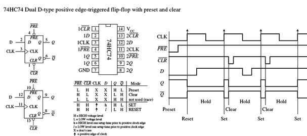
FIGURE 12.80
Note the lowercase letters l and h in the truth table in this figure. The h is similar to the H for a high voltage level, and the l is similar to the L for low voltage level; however, there is an additional condition that must be met for the flip-flop’s output to do what the truth table indicates. The additional condition is that the D input must be fixed high (or low) in duration for at least one setup time (ts) before the positive clock edge. This condition stems from the real-life propagation delays present in flip-flop ICs. If you try to make the flip-flop switch states too fast (do not give it time to move electrons around), you can end up with inaccurate output readings. For the 7474, the setup time is 20 ns. Therefore, when using this IC, you must not apply input pulses that are within the 20-ns limit. Other flip-flops will have different setup times, so you will need to check the manufacturer’s data sheets. I will discuss setup time and some other flip-flop timing parameters in greater detail in Section 12.6.6.
D-type flip-flops are sometimes found in the pulse-triggered (master-slave) variety. Recall that a pulse-triggered flip-flop requires a complete clock pulse before the outputs will reflect what is applied at the input(s) (in this case, the D input). Figure 12.81 shows the basic structure of a pulse-triggered D flip-flop. It is almost exactly like the pulse-triggered SR flip-flop, except for the inverter addition to the master’s input.
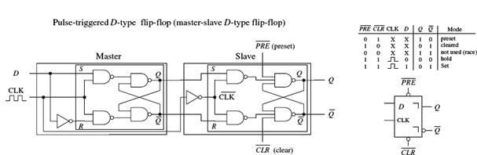
FIGURE 12.81
Now let’s look at a few simple D-type flip-flop applications.
In the stop-go indicator circuit, a simple level-triggered D-type flip-flop is used to turn on a red LED when its D input is low (reset) and turn on a green LED when the D input is high (set). Only one LED can be turned on at a time.
The divide-by-two counter uses a positive edge-triggered D-type flip-flop to divide an applied signal’s frequency by two. The explanation of how this works is simple: The positive edge-triggered feature does not care about negative edges. You can figure out the rest.
External Asynchronous Control Signal
A synchronizer is used when you want to use an external asynchronous control signal (perhaps generated by a switch or other input device) to control some action within a synchronous system. The synchronizer provides a means of keeping the phase of the action generated by the control signal in synch with the phase of the synchronous system.
For example, say you want an asynchronous control signal to control the number of clock pulses that get from point A to point B within a synchronous system. You might try using a simple enable gate, as shown below the synchronizer circuit in Fig. 12.82. However, because the external control signal is not synchronous (in phase) with the clock, when you apply the external control signal, you may shorten the first or last output pulse, as shown in the lower timing diagram.
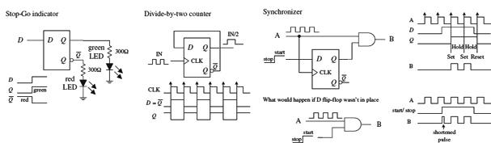
FIGURE 12.82
Certain applications do not like shortened clock pulses and will not function properly. To avoid shortened pulses, throw in an edge-triggered D-type flip-flop to create a synchronizer. The flip-flop’s CLK input is tapped off the input clock line, its D input receives the external control signal, and its Q output is connected to the AND gate’s enable input. With this arrangement, there will never be shortened clock pulses because the Q output of the flip-flop will not supply enable pulses to the AND gate that are out of phase with the input clock signal. This is due to the fact that after the flip-flop’s CLK input receives a positive clock edge, the flip-flop ignores any input changes applied to the D input until the next positive clock edge.
12.6.4 Quad and Octal D Flip-Flops
Most frequently, you will find a number of D flip-flops or D latches grouped together within a single IC. For example, the 74HC75, shown in Fig. 12.83, contains four transparent D latches. Latches 0 and 1 share a common active-low enable E0 – E1, while latches 2 and 3 share a common active-low enable E2 – E3. From the function table, each Q output follows each D input as long as the corresponding enable line is high. When the enable line goes low, the Q output will become latched to the value that D was one setup time prior to the high-to-low enable transition. The 4042 is another quad D-type latch, which works as described in Fig. 12.83. D-type latches are commonly used as data registers in bus-oriented systems, as is also explained in the figure.
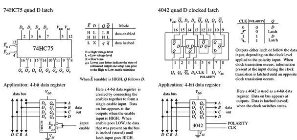
FIGURE 12.83
D flip-flops also come in octal form—eight flip-flops per IC. These devices are frequently used as 8-bit data registers within microprocessor systems, where devices share 8-bit or 2 × 8 = 16-bit data or address buses. An example of an octal D-type flip-flop is the 74HCT273 shown in Fig. 12.84. All D flip-flops within the 74HCT273 share a common positive edge-triggered clock input and a common active-low clear input. When the clock input receives a positive edge, data bits applied to D0 through D7 are stored in the eight flip-flops and appear at the outputs Q0 through Q7. To clear all flip-flops, the clear input is pulsed low. I will talk more about octal flip-flops and other bus-oriented devices in Section 12.9.
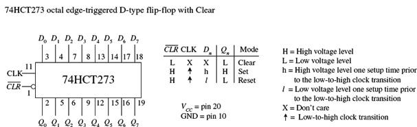
FIGURE 12.84
Finally, we come to the last of the flip-flops: the JK flip-flop. A JK flip-flop resembles an SR flip-flop, where J acts like S and K acts like R. Likewise, it has a set mode (J = 1, K = 0), a reset mode (J = 0, K = 1), and a hold mode (J = 0, K = 0). However, unlike the SR flip-flop, which has an indeterminate mode when S = 1, R = 1, the JK flip-flop has a toggle mode when J = 1, K = 1. Toggle means that the Q and  outputs switch to their opposite states at each active clock edge.
outputs switch to their opposite states at each active clock edge.
To make a JK flip-flop, modify the SR flip-flop’s internal logic circuit to include two cross-coupled feedback lines between the output and input. This modification, however, means that the JK flip-flop cannot be level-triggered; it can only be edge-triggered or pulse-triggered. Figure 12.85 shows how you can create edge-triggered flip-flops based on the cross-NAND SR edge-triggered flip-flop.
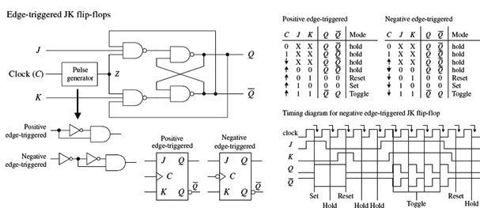
FIGURE 12.85
Edge-triggered JK flip-flops also come with preset (asynchronous set) and clear (asynchronous reset) inputs, as shown in Fig. 12.86.
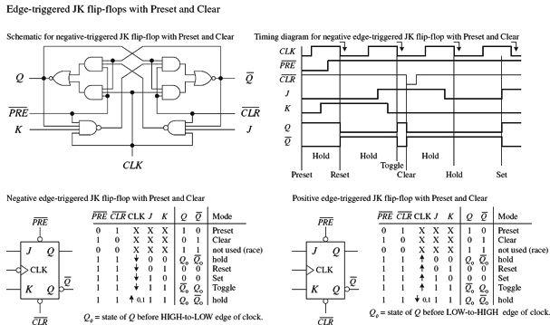
FIGURE 12.86
There are pulse-triggered (master-slave) flip-flops, too. These devices are similar to the pulse-triggered SR flip-flops with the exception of the distinctive JK cross-coupled feedback connections from the slave’s Q and outputs back to the master’s input gates. Figure 12.87 shows a simple NAND pulse-triggered JK flip-flop.
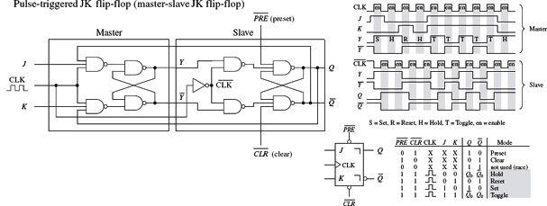
FIGURE 12.87
The pulse-triggered flip-flops are not as popular as the edge-triggered JK flip-flops because of an undesired effect that can occur. Pulse-triggered JK flip-flops occasionally experience what is called ones-catching. In ones-catching, unwanted pulses or glitches caused by electrostatic noise appear on J and K while the clock is high. The flip-flop remembers these glitches and interprets them as true data. Ones-catching normally is not a problem when clock pulses are of short duration; it is when the pulses get long that you must watch out. To avoid ones-catching altogether, stick with edge-triggered JK flip-flops.
Two major applications for JK flip-flops are found within counter and shift register circuits. Here, I will introduce a counter application. I will discuss shift registers in Section 12.8 and additional counter circuits in Section 12.7.
Ripple Counter (Asynchronous Counter)
A simple counter, called a MOD-16 ripple counter (or asynchronous counter), can be constructed by joining four JK flop-flops together, as shown in Fig. 12.89. (MOD-16, or modulus 16, means that the counter has 16 binary states.) This means that it can count from 0 to 15—the 0 is one of the counts.
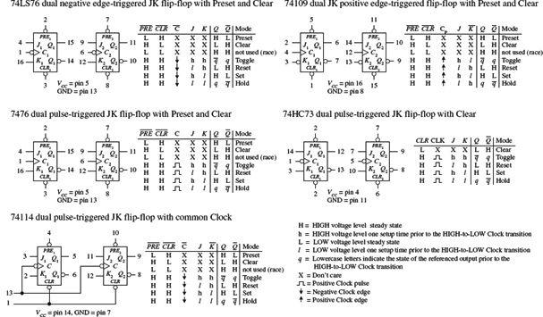
FIGURE 12.88
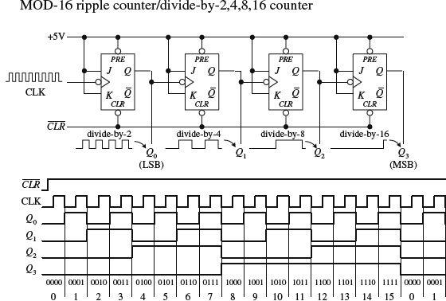
Each flip-flop in the ripple counter is fixed in toggle mode (J and K are both held high). The clock signal applied to the first flip-flop causes the flip-flop to divide the clock signal’s frequency by 2 at its Q0 output—a result of the toggle. The second flip-flop receives Q0’s output at its clock input and likewise divides by 2. The process continues down the line. What you get in the end is a binary counter with four digits. The LSB is Q0, while the MSB is Q3. When the count reaches 1111, the counter recycles back to 0000 and continues from there. To reset the counter at any given time, the active-low clear line is pulsed low. To make the counter count backward from 1111 to 0000, you would simply use the outputs.
FIGURE 12.89
The ripple counter in Fig. 12.89 also can be used as a divide-by-2, -4, -8, or -16 counter. Here, you simply replace the clock signal with any desired input signal that you wish to divide in frequency. To get a divide-by-2 counter, you only need the first flip-flop; to get a divide-by-8 counter, you need the first three flip-flops.
Ripple counters with higher MOD values can be constructed by slapping on more flip-flops to the MOD-16 counter. But how do you create a ripple counter with a MOD value other than 2, 4, 8, 16, and so on? For example, say you want to create a MOD-10 (0 to 9) ripple counter. And what do you do if you want to stop the counter after a particular count has been reached and then trigger some device, such as an LED or buzzer? Figure 12.90 shows just such a circuit.
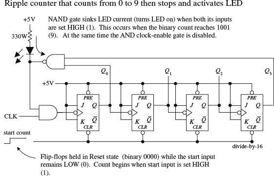
To make a MOD-10 counter, you simply start with the MOD-16 counter and connect the Q0 and Q3 outputs to a NAND gate. When the counter reaches 9 (1001), Q0 and Q3 will both go high, causing the NAND gate’s output to go low. The NAND gate then sinks current, turning the LED on, while at the same time disabling the clock-enable gate and stopping the count. (When the NAND gate is high, there is no potential difference across the LED to light it up.) To start a new count, the active-low clear line is momentarily pulsed low. Now, to make a MOD-15 counter, you would apply the same basic approach used to the left, but you would connect Q1, Q2, and Q3 to a three-input NAND gate.
FIGURE 12.90
Synchronous Counter
There is a problem with the ripple counter just discussed. The output stages of the flip-flops further down the line (from the first clocked flip-flop) take time to respond to changes that occur due to the initial clock signal. This is a result of the internal propagation delay that occurs within a given flip-flop. A standard TTL flip-flop may have an internal propagation delay of 30 ns. If you join four flip-flops to create a MOD-16 counter, the accumulative propagation delay at the highest-order output will be 120 ns. When used in high-precision synchronous systems, such large delays can lead to timing problems.
To avoid large delays, you can create what is called a synchronous counter. Synchronous counters, unlike ripple (asynchronous) counters, contain flip-flops whose clock inputs are driven at the same time by a common clock line. This means that output transitions for each flip-flop will occur at the same time.
With this approach, unlike with the ripple counter, you must use some additional logic circuitry placed between various flip-flop inputs and outputs to give the desired count waveform. For example, to create a 4-bit MOD-16 synchronous counter requires adding two additional AND gates, as shown in Fig. 12.91. The AND gates act to keep a flip-flop in hold mode (if both inputs of the gate are low) or toggle mode (if both inputs of the gate are high), as follows:
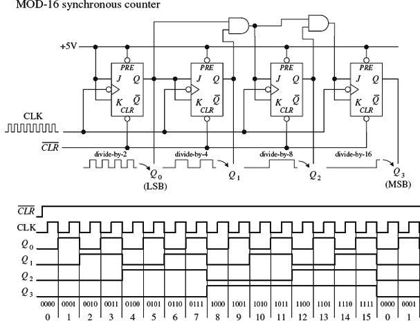
FIGURE 12.91
• During the 0–1 count, the first flip-flop is in toggle mode (and always is); all the rest are in hold mode.
• When it is time for the 2–4 count, the first and second flip-flops are placed in toggle mode; the last two are held in hold mode.
• When it is time for the 4–8 count, the first AND gate is enabled, allowing the third flip-flop to toggle.
• When it is time for the 8–15 count, the second AND gate is enabled, allowing the last flip-flop to toggle.
You can work out the details for yourself by studying the circuit and timing waveforms.
The ripple (asynchronous) and synchronous counters discussed so far are simple but hardly ever used. In practice, if you need a counter—ripple or synchronous—you purchase a counter IC. These ICs are often MOD-16 or MOD-10 counters and usually come with many additional features. For example, many ICs allow you to preset the count to a desired number via parallel input lines. Others allow you to count up or to count down by means of control inputs. Counter ICs are discussed in Section 12.7.
12.6.6 Practical Timing Considerations with Flip-Flops
When working with flip-flops, it is important to avoid race conditions. For example, a typical race condition would occur if, say, you were to apply an active clock edge at the very moment you apply a high or low pulse to one of the inputs of a JK flip-flop. Since the JK flip-flop uses what is present on the inputs at the moment the clock edge arrives, having a high-to-low input change will cause problems because you cannot determine if the input is high or low at that moment—it is a straight line.
To avoid this type of race condition, you must hold the inputs of the flip-flop high or low for at least one setup time ts before the active clock transition. If the input changes during the ts to the clock edge region, the output levels will be unreliable.
To determine the setup time for a given flip-flop, you must look through the manufacturer’s data sheets. For example, the minimum setup time for the 74LS76 JK flip-flop is 20 ns. Other timing parameters, such as hold time and propagation delay, are also given by the manufacturers. A description of what these parameters mean is given in Fig. 12.92.
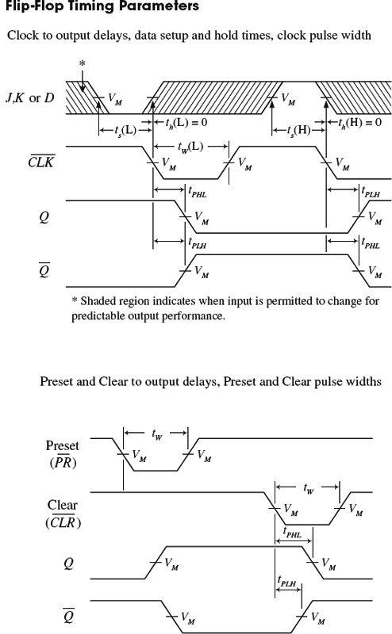
Setup time ts: The time that the input must be held before the active clock edge for proper operation. For a typical flip-flop, ts is around 20 ns.
Hold time th: The time that the input must be held after the active clock edge for proper operation. For most flip-flops, this is 0 ns—meaning inputs need not be held beyond the active clock signal.
TPLH: Propagation delay from clock trigger point to the low-to-high Q output swing. A typical TPLH for a flip-flop is around 20 ns.
TPHL: Propagation delay from clock trigger point to the high-to-low Q output swing. A typical TPLH for a flip-flop is around 20 ns.
fmax: Maximum frequency allowed at the clock input. Any frequency above this limit will result in unreliable performance. This can vary greatly.
tW(L): Clock pulse width (low), the minimum width (in nanoseconds) that is allowed at the clock input during the low level for reliable operation.
tW(H): Clock pulse width (high), the minimum width (in nanoseconds) that is allowed at the clock input during the high level for reliable operation.
Preset or clear pulse width: Also given by tW(L), the minimum width (in nanoseconds) of the low pulse at the preset or clear inputs.
FIGURE 12.92
12.6.7 Digital Clock Generators and Single-Pulse Generators
You have already seen the importance of clock and single-pulse control signals. Now let’s take a look at some circuits that can generate these signals.
Clocks (Astable Multivibrators)
A clock is simply a squarewave oscillator. Chapter 10 discusses ways to generate squarewaves, so you can refer there to learn the theory. Here, I will simply present some practical circuits. Digital clocks can be constructed from discrete components such as logic gates, capacitors, resistors, and crystals, or can be purchased in IC form. Figure 12.93 shows some sample clock generators.
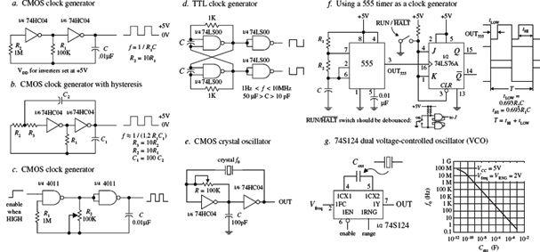
Figure a. Here, two CMOS inverters are connected together to form an RC relaxation oscillator with squarewave output. The output frequency is determined by the RC time constant, as shown in the figure.
Figure b. The previous oscillator has one problem: it may not oscillate if the transition regions of its two gates differ, or it may oscillate at a slightly lower frequency than the equation predicts due to the finite gain of the leftmost gate. The oscillator shown here resolves these problems by adding hysteresis via the additional RC network.
Figure c. This oscillator uses a pair of CMOS NAND gates and RC timing network along with a pot to set the frequency. A squarewave output is generated with a maximum frequency of around 2 MHz. The enable lead could be connected to the other input of the first gate, but here it is brought out to be used as a clock enable input (the clock is enabled when this lead is high).
Figure d. Here, a TTL SR flip-flop with dual feedback resistors uses an RC relaxation-type configuration to generate a squarewave. The frequency of the clock is determined by the R and C values, as shown in the figure. Changing the C1-to-C2 ratio changes the duty cycle.
Figure e. When high stability is required, a crystal oscillator is the best choice for a clock generator. Here, a pair of CMOS inverters and a feedback crystal are used (see Chapter 9 for details). The frequency of operation is determined by the crystal (such as 2 MHz or 10 MHz). Adjustment of the pot may be needed to start oscillations.
Figure f. A 555 timer in astable mode can be used to generate squarewaves. Here, we slap on a JK flip-flop that is in toggle mode to provide a means of keeping the low and high times the same, as well as providing clock-enable control. The timing diagram and the equations provided within the figure paint the rest of the picture.
Figure g. The 74S124 dual voltage-controlled oscillator (VCO) outputs squarewaves at a frequency that is dependent on the value of an external capacitor and the voltage levels applied its frequency-range input (VRNG) and its frequency control input (Vfreq). The graph in this figure shows how the frequency changes with capacitance, while VRNG and Vfreq are fixed at 2 V. This device also comes with active-low enable input. Other VCOs that are designed for clock generation include the 74LS624, 4024, and 4046 PLL (Phase Locked Loop). You will find many more listed in the catalogs.
FIGURE 12.93
Monostables (One-Shots)
To generate single-pulse signals of a desired width, you can use a discrete device called a monostable multivibrator, or one-shot for short. A one-shot has only one stable state, high (or low), and can be triggered into its unstable state, low (or high), for a duration of time set by an RC network. One-shots can be constructed from simple gates, capacitors, and resistors. These circuits, however, tend to be “finicky” and simply are not worth talking about. If you want a one-shot, you can buy a one-shot IC, which typically costs around 50 cents.
Two popular one-shots, shown in Fig. 12.94, are the 74121 nonretriggerable monostable multivibrator and the 74123 retriggerable monostable multivibrator.
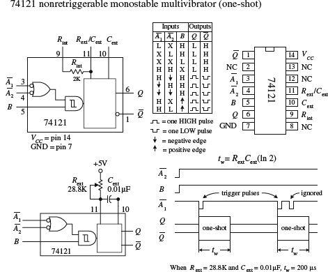
The 74121 has three trigger inputs ( 1, 2, B), true and complemented outputs (Q,), and timing inputs to which an RC network is attached (Rext/Cext, Cext). To trigger a pulse from the 74123, you can choose between five possible trigger combinations, as shown in the truth table in the figure. Bringing the input trigger in on B, however, is attractive when dealing with slowly rising or noisy signals, since the signal is directly applied to an internal Schmitt-triggered inverter (recall hystersis). To set the desired output pulse width (tw), a resistor/capacitor combination is connected to the Rext/Cext and Cext inputs, as shown. (An internal 2-k resistor is provided, which can be used alone by connecting pin 9 to VCC and placing the capacitor across pins 10 and 11, or which can be used in series with an external resistor attached to pin 9. Here, the internal resistor will not be used.) To determine which values to give to the external resistor and capacitor, use the formula given by the manufacturer, which is shown to the left. The maximum tw should not exceed 28 s (R = 40 k, C = 1000 μF) for reliable operation. Also, note that with a nonretriggerable one-shot like the 74121, any trigger pulses applied when the device is already in its astable state will be ignored.
1, 2, B), true and complemented outputs (Q,), and timing inputs to which an RC network is attached (Rext/Cext, Cext). To trigger a pulse from the 74123, you can choose between five possible trigger combinations, as shown in the truth table in the figure. Bringing the input trigger in on B, however, is attractive when dealing with slowly rising or noisy signals, since the signal is directly applied to an internal Schmitt-triggered inverter (recall hystersis). To set the desired output pulse width (tw), a resistor/capacitor combination is connected to the Rext/Cext and Cext inputs, as shown. (An internal 2-k resistor is provided, which can be used alone by connecting pin 9 to VCC and placing the capacitor across pins 10 and 11, or which can be used in series with an external resistor attached to pin 9. Here, the internal resistor will not be used.) To determine which values to give to the external resistor and capacitor, use the formula given by the manufacturer, which is shown to the left. The maximum tw should not exceed 28 s (R = 40 k, C = 1000 μF) for reliable operation. Also, note that with a nonretriggerable one-shot like the 74121, any trigger pulses applied when the device is already in its astable state will be ignored.
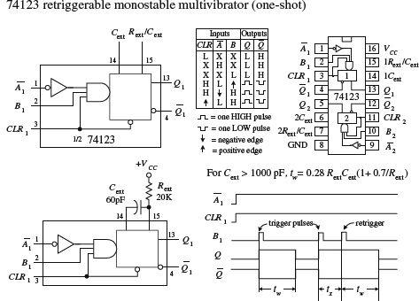
The 74123 is a dual, retriggerable one-shot. Unlike nonretriggerable one-shots, this device will not ignore trigger pulses that are applied during the astable state. Instead, when a new trigger pulse arrives during an astable state, the astable state will continue to be astable for a time of tw. In other words, the device is simply retriggered. The 74123 has two trigger inputs (,B) and a clear input (CLR). When CLR is low, the one-shot is forced back into its stable state (Q = low). To determine tw, use the formula given to the left, provided Cext > 1000 pF. If Cext < 1000 pF, use tw/Cext/Rext graphs provided by the manufacturer to find tw.
FIGURE 12.94
Note that a 555 timer IC can also be used as a monostable and is a lower-cost device.
Besides acting as simple pulse generators, one-shots can be combined to make time-delay generators and timing and sequencing circuits (see Fig. 12.95).
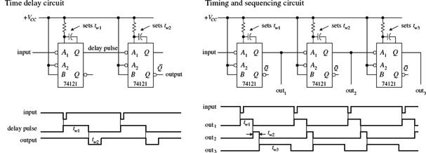
FIGURE 12.95
If you do not have a one-shot IC like the 74121, you can use a 555 timer (discussed in Chapter 9) wired in its monostable configuration, as shown in Fig. 12.96.
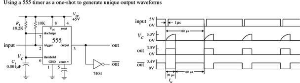
FIGURE 12.96
One-Shot/Continuous-Clock Generator
The circuit shown in Fig. 12.97 is a handy one-shot/continuous clock generator that is useful when you start experimenting with logic circuits.
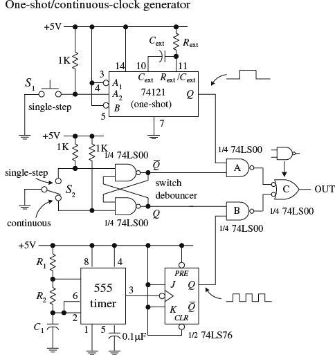
In this circuit, switch S2 is used to select whether a single-step or a continuous-clock input is to be presented to the output. When S2 is in the single-step position, the cross-NAND SR flip-flop (switch debouncer) is set (Q = 1, = 0). This disables NAND gate B while enabling NAND gate A, which will allow a single pulse from the one-shot to pass through gate C to the output. To trigger the one-shot, press switch S1. When S2 is thrown to the continuous position, the switch debouncer is reset (Q = 0, = 1). This disables NAND gate A and enables NAND gate B, allowing the clock signal generated by the 555/flip-flop to pass through gate C and to the output. (Just as a note to avoid confusion, you need gate C to prevent the output from being low and high at the same time.)
FIGURE 12.97
12.6.8 Automatic Power-Up Clear (Reset) Circuits
In sequential circuits, it is usually a good idea to clear (reset) devices when power is first applied. This ensures that devices, such as flip-flops and other sequential ICs, do not start out in a weird mode (for example, counter IC does not start counting at, say, 1101 instead of 0000). Figures 12.98 and 12.99 show some techniques used to provide automatic power-up clearing.
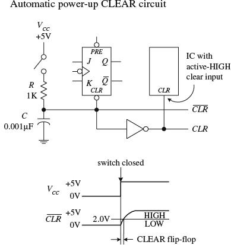
FIGURE 12.98
Let’s pretend that one of the devices in a circuit has a JK flip-flop that needs clearing during power-up. In order to clear the flip-flop and then quickly return it to synchronous operations, you would like to apply a low (0) voltage to its active-low clear input; afterward, you would like the voltage to go high (at least above 2.0 V for a 74LS76 JK flip-flop). A simple way to implement this function is to use an RC network like the one shown in the figure. When the power is off (switch open), the capacitor is uncharged (0 V). This means that the 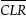 line is low (0 V). Once the power is turned on (switch closed), the capacitor begins charging up toward VCC (+5 V). However, until the capacitor’s voltage reaches 2.0 V, the line is considered low to the active-low clear input. After a duration of t = RC, the capacitor’s voltage will have reached 63 percent of VCC, or 3.15 V; after a duration of t = 5RC, its voltage will be nearly equal to +5 V. Since the 74LS76’s input requires at least 2.0 V to be placed back into synchronous operations, you know that t = RC is long enough. Thus, by rough estimate, if you want the line to remain low for 1 μs after power-up, you must set RC = 1 μs. Setting R = 1 k and C = 0.001 μF does the trick.
This automatic resetting scheme can be used within circuits that contain a number of resettable ICs. If an IC requires an active-high reset (not common), simply throw in an inverter and create an active-high clear line, as shown in the figure. Depending on the device being reset, the length of time that the clear line is at a low will be about 1 μs. As more devices are placed on the clear line, the low time duration will decrease due to the additional charging paths. To prevent this from occurring, a larger capacitor can be used.
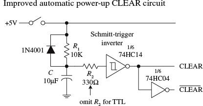
An improved automatic power-up clear circuit is shown in Fig. 12.99. Here a Schmitt-triggered inverter is used to make the clear signal switch off cleanly. With CMOS Schmitt-triggered inverters, a diode and input resistor (R2) are necessary to protect the CMOS IC when power is removed.
FIGURE 12.99
12.6.9 More on Switch Debouncers
The switch debouncer shown to the far left in Fig. 12.100 should look familiar. It is simply a cross-NAND SR-latch-type switch debouncer. This example uses a 74LS279A IC that contains four SR latches—an ideal choice when you need a number of switch debouncers.
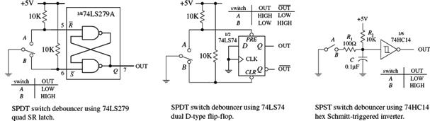
FIGURE 12.100
A switch debouncer does not need to be constructed from an SR latch. In fact, most any old flip-flop with preset and clear (reset) inputs can be used. For example, the middle circuit in Fig. 12.100 uses a 74LS74 D-type flip-flop, along with pullup resistor, as a switch debouncer. The D input and CLK input are tied to ground so that the only two modes that can be enacted are the preset and clear modes. Also, the pullup resistors will always make either the preset input or clear input high, regardless of whether the switch is bouncing. From these two facts, you can figure out the rest for yourself, using the truth table for the 74HC74 in Fig. 12.80 as a guide.
Another approach that can be used to debounce an SPST switch is shown on the far right in Fig. 12.100. This debouncer uses a Schmitt-triggered inverter along with a unique RC timing network. When the switch is open, the capacitor is fully charged (+5 V), and the output is low. When the switch is closed, the capacitor discharges rapidly to ground through the 100-Ω resistor, causing the output to go high. Now, as the switch bounces, the capacitor will repeatedly attempt to charge slowly back to +5 V via the 10-k resistor, and then again will discharge rapidly to zero through the 100-W resistor, making the output high. By making the 10-k pullup resistor larger than the 100-Ω discharge resistor, the voltage across the capacitor or the voltage applied to the inverter’s input will not get a chance to exceed the positive threshold voltage ( ) of the inverter during a bounce. Therefore, the output remains high, regardless of the bouncing switch. In this example, the charge-up time constant (R2C = 10 k × 0.1 μF) ensures sufficient leeway. When the switch is reopened, the capacitor charges up toward +5 V. When the capacitor’s voltage reaches , the output switches low.
) of the inverter during a bounce. Therefore, the output remains high, regardless of the bouncing switch. In this example, the charge-up time constant (R2C = 10 k × 0.1 μF) ensures sufficient leeway. When the switch is reopened, the capacitor charges up toward +5 V. When the capacitor’s voltage reaches , the output switches low.
12.6.10 Pullup and Pulldown Resistors
As you learned when dealing with the switch debouncer circuits, a pullup resistor is used to keep an input high that would otherwise float if left unconnected. If you want to set the “pulled up” input low, you can ground the pin, say, via a switch.
It is important to get an idea of the size of pullup resistor to use. The key here is to make the resistor value small enough so that the voltage drop across it does not weigh down the input voltage below the minimum high threshold voltage (VIH,min) of the IC. At the same time, you do not want to make it too small; otherwise, when you ground the pin, excessive current will be dissipated.
In the left diagram in Fig. 12.100, a 10-k pullup resistor is used to keep a 74LS device’s input high. To make the input low, close the switch. To figure out if the resistor is large enough so as not to weigh down the input, use Vin = +5 V − RIIH, where IIH is the current drawn into the IC during the high input state, when the switch is open. For a typical 74LS device, IIH is around 20 μA. Thus, by applying the simple formula, you find that Vin= 4.80 V, which is well above the VIH,min level for a 74LS device. Now, if you close the switch to force the input low, the power dissipated through the resistor (PD = V2/R) will be (5 V)2/10 k = 25 mW. The graph shown in Fig. 12.101 provides Vin versus R and PD versus R curves. As you can see, if R becomes too large, Vin drops below the VIH,min level, and the output will not go high as planned. As R gets smaller, the power dissipation skyrockets. To determine what value of R to use for a specific logic IC, you look up the VIH,min and IIH,max values within the data sheets and apply the simple formulas. In most applications, a 10-k pullup resistor will work fine.
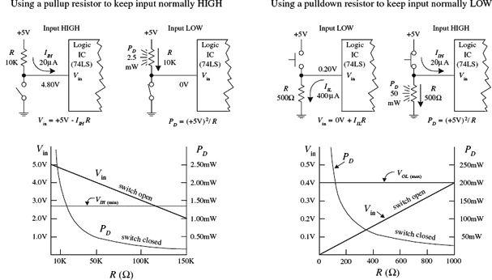
FIGURE 12.101
You will run into situations where a pulldown resistor is used to keep a floating terminal low. Unlike a pullup resistor, the pulldown resistor must be smaller because the input low current IIL (sourced by IC) is usually much larger than IIH. Typically, a pulldown resistor is around 100 to 1 kΩ. A lower resistance ensures that Vin is low enough to be interpreted as a low by the logic input. To determine if Vin is low enough, use Vin = 0 V + IILR. As an example, use a 74LS device with an IIL = 400 μA and a 500-Ω pulldown resistor. When the switch is open, the input will be 0.20 V—well below the VIL,max level for the 74LS (~0.8 V). When the switch is closed, the power dissipated by the resistor will be (5 V)2/500 Ω = 50 mW. The graph shown in Fig. 12.101 provides Vin versus R and PD versus R curves. As you can see by the curves, if R becomes too large, Vin surpasses VIL,max, and the output will not be low as planned. As R gets small, the power dissipation skyrockets. If you need to use a pulldown resistor/switch arrangement, be wary of the high power dissipation through the resistor when the switch is closed.
12.7 Counter ICs
In Section 12.6.5, you saw how flip-flops could be combined to make both asynchronous (ripple) and synchronous counters. In practice, using discrete flip-flops is to be avoided. Instead, use a prefabricated counter IC. These ICs cost a dollar or two and come with many additional features, like control enable inputs, parallel loading, and so on. A number of different kinds of counter ICs are available. They come in either synchronous (ripple) or asynchronous forms and are usually designed to count in binary or binary-coded decimal (BCD).
12.7.1 Asynchronous Counter (Ripple Counter) ICs
Asynchronous counters work fine for many noncritical applications, but for high-frequency applications that require precise timing, synchronous counters work better. Recall that unlike an asynchronous counter, a synchronous counter contains flip-flops that are clocked at the same time, and hence the synchronous counter does not accumulate nearly as many propagation delays as is the case with the asynchronous counter. Let’s look at a few asynchronous counter ICs you will find in the electronics catalogs.
7493 4-Bit Ripple Counter with Separate MOD-2 and MOD-8 Counter Sections
The 7493’s internal structure consists of four JK flip-flops connected to provide separate MOD-2 (0-to-1 counter) and MOD-8 (0-to-7 counter) sections. Both the MOD-2 and MOD-8 sections are clocked by separate clock inputs. The MOD-2 section uses Cp0 as its clock input, while the MOD-8 section uses Cp1 as its clock input. Likewise, the two sections have separate outputs: MOD-2’s output is Q0, while MOD-8’s outputs consist of Q1, Q2, and Q3. The MOD-2 section can be used as a divide-by-2 counter. The MOD-8 section can be used as a divide-by-2 counter (output tapped at Q1), a divide-by-4 counter (output tapped at Q2), or a divide-by-8 counter (output tapped at Q3). If you want to create a MOD-16 counter, simply join the MOD-2 and MOD-8 sections by wiring Q0 to Cp1, while using Cp0 as the single clock input.
The MOD-2, MOD-8, or the MOD-16 counter can be cleared by making both AND-gated master reset inputs (MR1 and MR2) high. To begin a count, one or both of the master reset inputs must be made low. When the negative edge of a clock pulse arrives, the count advances one step. After the maximum count is reached (1 for MOD-2, 111 for MOD-8, or 1111 for MOD-16), the outputs jump back to zero, and a new count begins.
7490 4-Bit Ripple Counter with MOD-2 and MOD-5 Counter Sections
The 7490, like the 7493, is another 4-bit ripple counter. However, its flip-flops are internally connected to provide MOD-2 (count-to-2) and MOD-5 (count-to-5) counter sections. Again, each section uses a separate clock: Cp0 for MOD-2 and Cp1 for MOD-5. By connecting Q0 to Cp1 and using Cp0 as the single clock input, a MOD-10 counter (decade or BCD counter) can be created.
When master reset inputs MR1 and MR2 are set high, the counter’s outputs are reset to 0—provided that master set inputs MS1 and MS2 are not both high (the MS inputs override the MR inputs). When MS1 and MS2 are high, the outputs are set to Q0 = 1, Q1 = 0, Q2 = 0, and Q3 = 1. In the MOD-10 configuration, this means that the counter is set to 9 (binary 1001). This master set feature comes in handy if you wish to start a count at 0000 after the first clock transition occurs (with master reset, the count starts out at 0001).
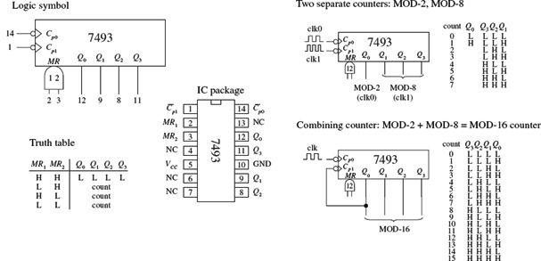
FIGURE 12.102
FIGURE 12.103
7492 Divide-by-12 Ripple Counter with MOD-2 and MOD-6 Counter Sections
The 7492 is another 4-bit ripple counter that is similar to the 7490. However, it has a MOD-2 and a MOD-6 section, with corresponding clock inputs Cp0 (MOD-2) and Cp1 (MOD-8). By joining Q0 to Cp1, you get a MOD-12 counter, where Cp0 acts as the single clock input. To clear the counter, high levels are applied to master reset inputs MR1 and MR2.
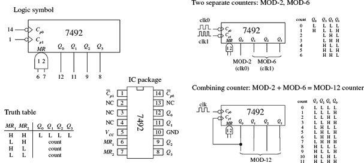
FIGURE 12.104
12.7.2 Synchronous Counter ICs
Like the asynchronous counter ICs, synchronous counter ICs come in various MOD arrangements. These devices usually come with extra goodies, such as controls for up or down counting and parallel load inputs used to preset the counter to a desired start count. Synchronous counter ICs are more popular than the asynchronous ICs, not only because of these additional features, but also because they do not have such long propagation delays as asynchronous counters. Let’s take a look at a few popular IC synchronous counters.
74193 Presettable 4-Bit (MOD-16) Synchronous Up/Down Counter
The 74193 is a versatile 4-bit synchronous counter that can count up or count down and can be preset to any count desired—at least a number between 0 and 15. There are two separate clock inputs: CpU is used to count up, and CpD is used to count down. One of these clock inputs must be held high in order for the other input to count. The binary output count is taken from Q0 (20), Q1 (21), Q2 (22), and Q3 (23).
To preset the counter to any desired count, a corresponding binary number is applied to the parallel inputs D0 to D3. When the parallel load input (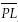) is pulsed low, the binary number is loaded into the counter, and the count, either up or down, will start from that number. The terminal count up (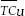) and terminal count down () outputs are normally high. The output is used to indicate when the maximum count has been reached and the counter is about to recycle to the minimum count (0000)—the carry condition. Specifically, this means that goes low when the count reaches 15 (1111) and the input clock (CpU) goes from high to low. remains low until CpU returns high. This low pulse at can be used as an input to the next high-order stage of a multistage counter. The terminal count down () output is used to indicate that the minimum count has been reached (0000) and the counter is about to recycle to the maximum count 15 (1111)—the borrow condition. Specifically, this means that goes low when the down count reaches 0000 and the input clock (CpD) goes low. Figure 12.105 provides a truth table for the 74193, along with a sample load, up-count, and down-count sequence.
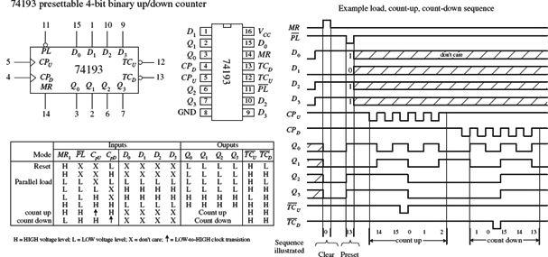
FIGURE 12.105
74192 Presettable Decade (BCD or MOD-10) Synchronous Up/Down Counter
The 74192, shown in Fig. 12.106, is essentially the same device as the 74193, except it counts up from 0 to 9 and repeats or counts down from 9 to 0 and repeats. When counting up, the terminal count up (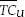) output goes low to indicate when the maximum count is reached (9 or 1001) and the CpU clock input goes from high to low. remains low until CpU returns high. When counting down, the terminal count down output ( ) goes low when the minimum count is reached (0 or 0000) and the input clock CpD goes low. The truth table and example load, count-up, and count-down sequence provided in Fig. 12.106 explain how the 74192 works in greater detail.
) goes low when the minimum count is reached (0 or 0000) and the input clock CpD goes low. The truth table and example load, count-up, and count-down sequence provided in Fig. 12.106 explain how the 74192 works in greater detail.
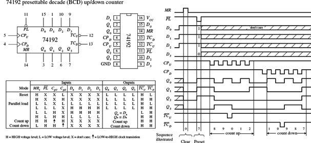
FIGURE 12.106
74190 Presettable Decade (BCD or MOD-10) and 74191 Presettable 4-Bit (MOD-16) Synchronous Up/Down Counters
The 74190 and the 74191 do basically the same things as the 74192 and 74193, but the input and output pins, as well as the operating modes, are a bit different. (The 74190 and the 74191 have the same pinouts and operating modes; the only difference is the maximum count.) Like the previous synchronous counters, these counters can be preset to any count by using the parallel load () operation. However, unlike the previous synchronous counters, to count up or down requires using a single input:  /D. When /D is set low, the counter counts up; when /D is high, the counter counts down.
/D. When /D is set low, the counter counts up; when /D is high, the counter counts down.
A clock enable input ( ) acts to enable or disable the counter. When is low, the counter is enabled. When is high, counting stops, and the current count is held fixed at the Q0 to Q3 outputs.
) acts to enable or disable the counter. When is low, the counter is enabled. When is high, counting stops, and the current count is held fixed at the Q0 to Q3 outputs.
Unlike the previous synchronous counters, the 74190 and the 74191 use a single terminal count output (TC) to indicate when the maximum or minimum count has occurred and the counter is about to recycle. In count-down mode, TC is normally low but goes high when the counter reaches zero (for both the 74190 and 74191). In count-up mode, TC is normally low but goes high when the counter reaches 9 (for the 74190) or reaches 15 (for the 74191).
The ripple-clock output () follows the input clock (CP) whenever TC is high. This means, for example, that in count-down mode, when the count reaches zero, will go low when CP goes low. The output can be used as a clock input to the next higher stage of a multistage counter. This, however, leads to a multistage counter that is not truly synchronous because of the small propagation delay from CP to of each counter. To make a multistage counter that is truly synchronous, you must tie each IC’s clock to a common clock input line. You use the TC output to inhibit each successive stage from counting until the previous stage is at its terminal count. Figure 12.107 shows various asynchronous (ripple-like) and synchronous multistage counters built from 74191 ICs.
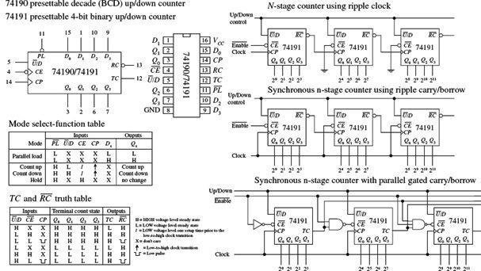
FIGURE 12.107
Presettable 4-Bit (MOD-16) Synchronous Up/Down Counter
The 74160 and 74163 resemble the 74190 and 74191 but require no external gates when used in multistage counter configurations. Instead, you simply cascade counter ICs together, as shown in Fig. 12.109.
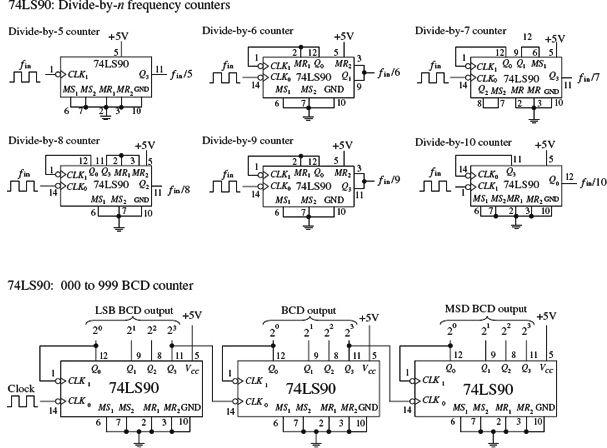
FIGURE 12.109
For both devices, a count can be preset by applying the desired count to the D0 to D3 inputs and then applying a low to the parallel enable input (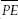) ; the input number is loaded into the counter on the next low-to-high clock transition. The master reset ( ) is used to force all Q output low, regardless of the other input signals. The two clock enable inputs (CEP and CET) must be high for counting to begin. The terminal count output (TC) is forced high when the maximum count is reached, but will be forced low if CET goes low. This is an important feature that makes the multistage configuration synchronous, while avoiding the need for external gating. The truth tables along with the example load, count-up, and count-down timing sequences in Figs. 12.108 and 12.109 should help you better understand how these two devices work.
) is used to force all Q output low, regardless of the other input signals. The two clock enable inputs (CEP and CET) must be high for counting to begin. The terminal count output (TC) is forced high when the maximum count is reached, but will be forced low if CET goes low. This is an important feature that makes the multistage configuration synchronous, while avoiding the need for external gating. The truth tables along with the example load, count-up, and count-down timing sequences in Figs. 12.108 and 12.109 should help you better understand how these two devices work.
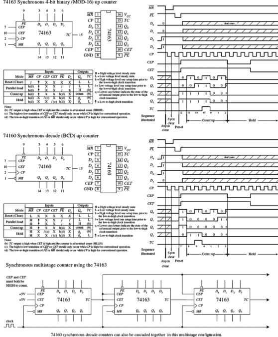
FIGURE 12.108
12.7.3 A Note on Counters with Displays
If you want to build a fairly sophisticated counter that can display many digits, the previous techniques are not worth pursuing, because there are simply too many discrete components to work with (for example, a separate seven-segment decoder/driver for each digit). A common alternative approach is to use a microcontroller that functions both as a counter and a display driver.
What microcontrollers can do that discrete circuits have a hard time achieving is multiplex a display. In a multiplexed system, corresponding segments of each digit of a multidigit display are linked together, while the common lines for each digit are brought out separately. You can see that the number of lines is significantly reduced; a nonmultiplexed 7-segment 4-digit display has 28 segment lines and 4 common lines, while the 4-digit multiplexed display has only 7 + 4, or 11, lines.
The trick to multiplexing involves flashing each digit, one after the other (and recycling), in a fast enough manner to make it appear that the display is continuously lit. In order to multiplex, the microcontroller’s program must supply the correct data to the segment lines at the same time that it enables a given digit via a control signal sent to the common lead of that digit. I will talk about multiplexing in greater detail in Chapter 13.
Another approach used to create multidigit counters is to use a multidigit counter/display driver IC. One such IC is the ICM7217, a four-digit LED display programmable up/down counter made by Intersil. This device is typically used in hardwired applications where thumbwheel switches are used to load data and SPDT switches are used to control the chip. The ICM7217A provides multiplexed seven-segment LED display outputs that are used to drive common cathode displays.
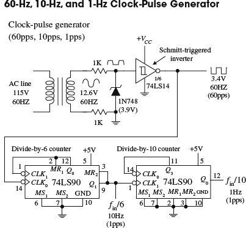
This simple clock-pulse generator provides a unique way to generate 60-, 10-, and 1-Hz clock signals that can be used in applications that require real-time counting. The basic idea is to take the characteristic 60-Hz ac line voltage (from the wall socket) and convert it into a lower-voltage squarewave of the same frequency. (Note that countries other than the United States typically use 50 Hz instead of 60 Hz. For 50 Hz operation, use an appropriate transformer and replace the divide-by-6 counter with the divide-by-5 counter shown in the upper left of Fig. 12.109.) First, the ac line voltage is stepped down to 12.6 V by the transformer. The negative-going portion of the 12.6-V ac voltage is removed by the zener diode (which acts as a half-wave rectifier). At the same time, the zener diode clips the positive-going signal to a level equal to its reverse breakdown voltage (3.9 V). This prevents the Schmitt-triggered inverter from receiving an input level that exceeds its maximum input rating. The Schmitt-triggered inverter takes the rectified/chipped sine wave and converts it into a true squarewave. The Schmitt trigger’s output goes low (~0.2 V) when the input voltage exceeds its positive threshold voltage (~1.7 V) and goes high (~3.4 V) when its input falls below its negative threshold voltage  (~0.9 V). From the inverter’s output, you get a 60-Hz squarewave (or a clock signal beating out 60 pulses per second). To get a 10-Hz clock signal, you slap on a divide-by-6 counter. To get a 1-Hz signal, you slap a divide-by-10 counter onto the output of the divide-by-6 counter.
(~0.9 V). From the inverter’s output, you get a 60-Hz squarewave (or a clock signal beating out 60 pulses per second). To get a 10-Hz clock signal, you slap on a divide-by-6 counter. To get a 1-Hz signal, you slap a divide-by-10 counter onto the output of the divide-by-6 counter.
FIGURE 12.110
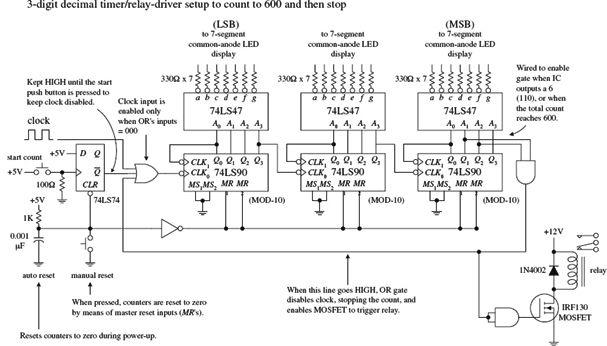
In the circuit shown here, three 74LS90 MOD-10 counter ICs are used to create a three-digit (decimal) counter. Features to note include an auto-reset RC network that acts to reset counters during power-up via the master reset inputs. Before the count begins, the D flip-flop’s output is held high, disabling the clock from reaching the first counter’s clock input. When the push button switch is closed, the flip-flop’s output goes low, enabling the first counter to count. The BCD outputs of each counter are fed through separate BCD-to-seven-segment decoder/driver ICs, which in turn drive the LED displays. The far-left counter’s output represents the count’s LSB, while the far-right counter’s output represents the count’s MSB. As shown, the last counter’s output is wired so that when a count of 600 is reached, an AND gate is enabled, causing the three-input OR gate to disable the clock (stop count) while also triggering a relay. To reset the counter, the manual reset switch is momentarily closed.
FIGURE 12.111
Synchronous counter applications
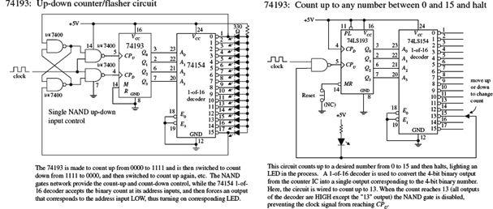
FIGURE 12.112
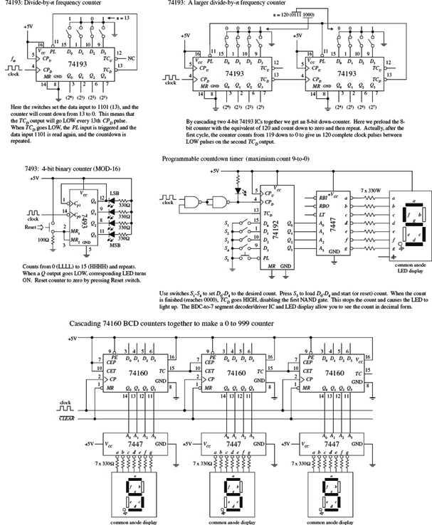
FIGURE 12.113
A simple application of the ICM7217A is a four-digit unit counter shown in Fig. 12.114. If you are interested in knowing all the specifics of how this counter works, along with learning about other applications for this device, check out Maxim’s data sheets at http://www.maxim-ic.com/datasheet/index.mvp/id/1501. It is better to learn from the maker in this case. Also, take a look at the other counter/display driver ICs Maxim has to offer. Other manufacturers produce similar devices, so visit their websites as well.
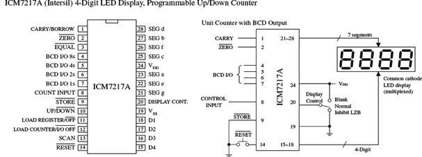
FIGURE 12.114
12.8 Shift Registers
Data words traveling through a digital system frequently must be temporarily held, copied, and bit-shifted to the left or to the right. A device that can be used for such applications is the shift register. A shift register is constructed from a row of flip-flops connected so that digital data can be shifted down the row either in a left or right direction. Most shift registers can handle parallel movement of data bits as well as serial movement, and also can be used to convert from parallel to serial or from serial to parallel. Figure 12.115 shows several types of shift register arrangements: serial-in/serial-out, parallel-in/serial-out, and serial-in/parallel out.
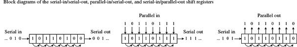
FIGURE 12.115
12.8.1 Serial-In/Serial-Out Shift Registers
Figure 12.116 shows a simple 4-bit serial-in/serial-out shift register made from D flip-flops. Serial data is applied to the D input of flip-flop 0. When the clock line receives a positive clock edge, the serial data is shifted to the right from flip-flop 0 to flip-flop 1. Whatever bits of data were present at flip-flop 2’s, 3’s, and 4’s outputs are shifted to the right during the same clock pulse. To store a 4-bit word into this register requires four clock pulses. The rightmost circuit shows how you can rewire the flip-flops to make a shift-left register. To make larger bit-shift registers, more flip-flops are added (for example, an 8-bit shift register would require eight flip-flops cascaded together).
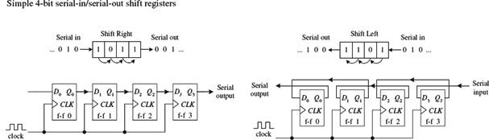
FIGURE 12.116
12.8.2 Serial-In/Parallel-Out Shift Registers
Figure 12.117 shows a 4-bit serial-in/parallel-out shift register constructed from D flip-flops. This circuit is essentially the same as the previous serial-in/serial-out shift register, except now you attach parallel output lines to the outputs of each flip-flop as shown. Note that this shift register circuit also comes with an active-low clear input () and a strobe input that acts as a clock enable control. The timing diagram in the figure shows a sample serial-to-parallel shifting sequence.
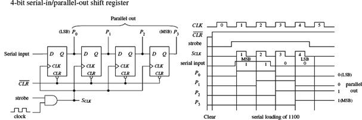
FIGURE 12.117
12.8.3 Parallel-In/Serial-Out Shift Registers
Constructing a 4-bit parallel-to-serial shift register from D flip-flops requires some additional control logic, as shown in the circuit in Fig. 12.118. Parallel data must first be loaded into the D inputs of all four flip-flops. To load data, the SHIFT/ is made low. This enables the AND gates with X marks, allowing the 4-bit parallel input word to enter the D0–D3 inputs of the flip-flops. When strobe and CLK are both high, the 4-bit parallel word is latched simultaneously into the four flip-flops and appears at the Q0–Q3 outputs. To shift the latched data out through the serial output, the SHIFT/ line is made high. This enables all unmarked AND gates, allowing the latched data bit at the Q output of a flip-flop to pass (shift) to the D input of the flip-flop to the right. In this shift mode, four clock pulses are required to shift the parallel word out of the serial output.
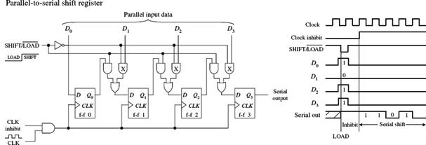
FIGURE 12.118
12.8.4 Ring Counter (Shift Register Sequencer)
The ring counter (shift register sequencer) is a unique type of shift register that incorporates feedback from the output of the last flip-flop to the input of the first flip-flop. Figure 12.119 shows a 4-bit ring counter made from D-type flip-flops. In this circuit, when the input is set low, Q0 is forced high by the active-low preset, while Q1, Q2, and Q3 are forced low (cleared) by the active-low clear. This causes the binary word 1000 to be stored within the register. When the line is brought low, the data bits stored in the flip-flops are shifted right with each positive clock edge. The data bit from the last flip-flop is sent to the D input of the first flip-flop. The shifting cycle will continue to recirculate while the clock is applied. To start a fresh cycle, the line is momentarily brought low.
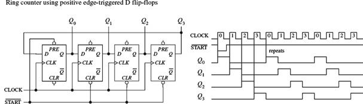
FIGURE 12.119
12.8.5 Johnson Shift Counter
The Johnson shift counter is similar to the ring counter except that its last flip-flop feeds data back to the first flip-flop from its inverted output (). For this reason, this type is sometimes called a Moebius counter, as the bit sequence will be shifted out first “normally,” then inverted, then normally, and so on. In the simple 4-bit Johnson shift counter shown in Fig. 12.120, you start out by applying a low to the line, which sets presets Q0 high; Q1, Q2, and Q3 low; and 3 high. In other words, you load the register with the binary word 1000, as you did with the ring counter.
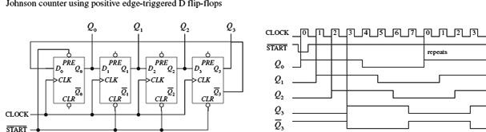
FIGURE 12.120
Now, when you bring the line low, data will shift through the register. However, unlike the ring counter, the first bit sent back to the D0 input of the first flip-flop will be high because feedback is from 3 not Q3. At the next clock edge, another high is fed back to D0; at the next clock edge, another high is fed back; at the next edge, another high is fed back. Only after the fourth clock edge does a low get fed back (the 1 has shifted down to the last flip-flop and 3 goes high). At this point, the shift register is full of 1s.
As more clock pulses arrive, the feedback loop supplies lows to D0 for the next four clock pulses. After that, the Q outputs of all the flip-flops are low, while 3 goes high. This high from 3 is fed back to 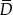0 during the next positive clock edge, and the cycle repeats.
As you can see, the 4-bit Johnson shift counter has eight output stages (which require eight clock pulses to recycle), not four, as is the case with the ring counter.
12.8.6 Shift Register ICs
Now that we have covered the basic theory of shift registers, let’s take a look at practical shift register ICs that contain all the necessary logic circuitry inside.
7491A 8-Bit Serial-In/Serial-Out Shift Register IC
The 7491A is an 8-bit serial-in/serial-out shift register that consists of eight internally linked SR flip-flops. This device has positive edge-triggered inputs and a pair of data inputs (A and B) that are internally ANDed together, as shown in the logic diagram in Fig. 12.121. This type of data input means that for a binary 1 to be shifted into the register, both data inputs must be high. For a binary 0 to be shifted into the register, either input can be low. Data is shifted to the right at each positive clock edge.
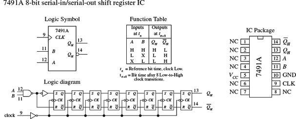
FIGURE 12.121
74164 8-Bit Serial-In/Parallel-Out Shift Register IC
The 74164 is an 8-bit serial-in/parallel-out shift register. It contains eight internally linked flip-flops and has two serial inputs, Dsa and Dsb, which are ANDed together. Like the 7491A, the unused serial input acts as an enable/disable control for the other serial input. For example, if you use Dsa as the serial input, you must keep Dsb high to allow data to enter the register, or you can keep it low to prevent data from entering the register.
Data bits are shifted one position to the right at each positive clock edge. The first data bit entered will end up at the Q7 parallel output after the eighth clock pulse. The master reset () resets all internal flip-flops and forces the Q outputs low when it is pulsed low.
In the sample circuit shown in Fig. 12.122, a serial binary number 10011010 (15410) is converted into its parallel counterpart. Note the AND gate and strobe input used in this circuit. The strobe input acts as a clock enable input; when it is set high, the clock is enabled. The timing diagram paints the rest of the picture.
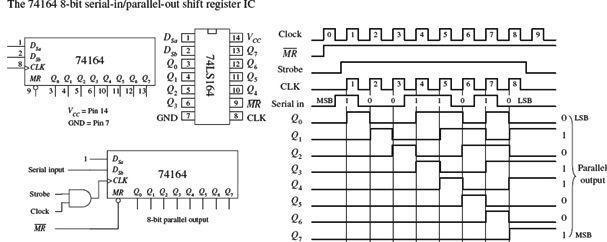
FIGURE 12.122
75165 8-Bit Serial-In or Parallel-In/Serial-Out Shift Register IC
The 75165 is a unique 8-bit device that can act as either a serial-to-serial shift register or as a parallel-to-serial shift register. When used as a parallel-to-serial shift register, parallel data is applied to the D0–D7 inputs and then loaded into the register when the parallel load input () is pulsed low. To begin shifting the loaded data out of the serial output Q7 (or 7 if you want inverted bits), the clock enable input () must be set low to allow the clock signal to reach the clock inputs of the internal D-type flip-flops. When used as a serial-to-serial shift register, serial data is applied to the serial data input DS. A sample shift, load, and inhibit timing sequence is shown in Fig. 12.123.
FIGURE 12.123
74194 Universal Shift Register IC
Figure 12.124 shows the 74194 4-bit bidirectional universal shift register. This device can accept either serial or parallel inputs, provide serial or parallel outputs, and shift left or right based on input signals applied to select controls S0 and S1. Serial data can be entered into either the serial shift-right input (DSR) or the serial shift-left input (DSL). Select controls S0 and S1 are used to initiate a hold (S0 = low, S1 = low), shift left (S0 = low, S1 = high), shift-right (S0 = high, S1 = low), or to parallel load (S0 = high, S1 = high) mode. A clock pulse must then be applied to shift or parallel load the data.
FIGURE 12.124
In parallel load mode (S0 and S1 are high), parallel input data is entered via the D0 through D3 inputs and transferred to the Q0 to Q3 outputs following the next low-to-high clock transition. The 74194 also has an asynchronous master reset () input that forces all Q outputs low when pulsed low. To make a shift-right recirculating register, the Q3 output is wired back to the DSR input, while making S0 = high and S1 = low. To make a shift-left recirculating register, the Q0 output is connected back to the DSL input, while making S0 = low and S1 = high. The timing diagram in Fig. 12.124 shows a typical parallel load and shifting sequence.
74299 8-Bit Universal Shift/Storage Register with Three-State Interface
A number of shift registers have three-state outputs—outputs that can assume a high, low, or high impedance state (open-circuit or float state). These devices are commonly used as storage registers in three-state bus interface applications.
An example 8-bit universal shift/storage register with three-state outputs is the 74299, shown in Fig. 12.125. This device has four synchronous operating modes that are selected via two select inputs, S0 and S1. Like the 74194 universal shift register, the 74299’s select modes include shifting right, shifting left, holding, and parallel loading (see the function table in Fig. 12.125). The mode-select inputs, serial data inputs (DS0 and DS7), and parallel-data inputs (I/O0 through I/O7) are positive edge triggered. The master reset () input is an asynchronous active-low input that clears the register when pulsed low.
FIGURE 12.125
The three-state bidirectional I/O port has three modes of operation:
• The read-register mode allows data within the register to be available at the I/O outputs. This mode is selected by making both output-enable inputs (1 and 2) low and making one or both select inputs low.
• The load-register mode sets up the register for a parallel load during the next low-to-high clock transition. This mode is selected by setting both select inputs high.
• The disable-I/O mode acts to disable the outputs (set to a high impedance state) when a high is applied to one or both of the output-enable inputs. This effectively isolates the register from the bus to which it is attached.
12.8.7 Simple Shift Register Applications
16-Bit Serial-to-Parallel Converter
A simple way to create a 16-bit serial-to-parallel converter is to join two 74164 8-bit serial-in/parallel-out shift registers, as shown in Fig. 12.126. To join the two ICs, simply wire the Q7 output from the first register to one of the serial inputs of the second register. (Recall that the serial input that is not used for serial input data acts as an active-high enable control for the other serial input.)
FIGURE 12.126
In terms of operation, when data is shifted out of Q7 of the first register (or data output D7), it enters the serial input of the second (the example uses DSa as the serial input) and will be presented to the Q0 output of the second register (or data output D8). For an input data bit to reach the Q7 output of the second register (or data output D15), 16 clock pulses must be applied.
8-Bit Serial-to-Parallel Converter with Simultaneous Data Transfer
Figure 12.127 shows a circuit that acts as a serial-to-parallel converter that outputs the converted 8-bit word only when all 8 bits have been entered into the register. Here, a 74164 8-bit serial-in/parallel-out shift register is used, along with a 74HCT273 octal D-type flip-flop and a divide-by-8 counter. At each positive clock edge, the serial data is loaded into the 74164. After eight clock pulses, the first serial bit entered is shifted down to the 74164’s Q7 output, while the last serial bit entered resides at the 74164’s Q0 output. At the negative edge of the eighth clock pulse, the negative-edge triggered divide-by-8 circuit’s output goes high. During this high transition, the data present on the inputs of the 74HCT273 (which hold the same data present at the 74164’s Q outputs) is passed to the 74HCT273’s outputs at the same time. (Think of the 74HCT273 as a temporary storage register that dumps its contents after every eighth clock pulse.)
FIGURE 12.127
8-Bit Parallel-to-Serial Interface
Figure 12.128 shows a 74165 8-bit parallel-to-serial shift register used to accept a parallel ASCII word and convert it into a serial ASCII word that can be sent to a serial device. Recall that ASCII codes are only 7 bits long (for example, the binary code for & is 010 0110). How do you account for the missing bit? As it turns out, most 8-bit devices communicating via serial ASCII will use an additional eighth bit for a special purpose, perhaps to act as a parity bit or as a special function bit to enact a special set of characters. Often, the extra bit is simply set low and ignored by the serial device receiving it.
FIGURE 12.128
To keep things simple, let’s set the extra bit low and assume that is how the serial device likes things done. This means that you will set the D0 input of the 74165 low. The MSB of the ASCII code will be applied to the D1 input, while the LSB of the ASCII code will be applied to the D7 input. Now, with the parallel ASCII word applied to the inputs of the register, when you pulse the parallel load line () low, the ASCII word, along with the “ignored bit,” is loaded into the register. Next, you must enable the clock to allow the loaded data to be shifted out serially, by setting the clock enable input () low for the duration it takes for the clock pulses to shift out the parallel word. After the eighth clock pulse (0 to 7), the serial device will have received all 8 serial data bits. Practically speaking, a microprocessor or microcontroller is necessary to provide the and lines with the necessary control signals to ensure that the register and serial device communicate properly.
Recirculating Memory Registers
A recirculating memory register is a shift register that is preloaded with a binary word that is serially recirculated through the register via a feedback connection from the output to the input. Recirculating registers can be used for a number of applications, from supplying a specific repetitive waveform used to drive IC inputs to driving output drivers used to control stepper motors.
In the leftmost circuit in Fig. 12.129, a parallel 4-bit binary word is applied to the D0 to D3 inputs of a 74194 universal shift register. When the S1 select input is brought high (switch opened), the 4-bit word is loaded into the register. When the S1 input is then brought low (switch closed), the 4-bit word is shifted in a serial fashion through the register, out Q3, and back to Q0 via the DSR input (serial shift-right input) as positive clock edges arrive. Here, the shift register is loaded with 0111. As you begin shifting the bits through the register, a single low output will propagate down through high outputs, which in turn causes the LED attached to the corresponding low output to turn on. In other words, you have made a simple Christmas tree flasher.
FIGURE 12.129
The rightmost circuit in Fig. 12.129 is basically the same thing as the leftmost circuit. However, now the circuit is used to drive a stepper motor. Typically, a stepper motor has four stator coils that must be energized in sequence to make the motor turn at a given angle. For example, to make a simple stepper motor turn clockwise, you must energize its stator coils 1, 2, 3, and 4 in the following sequence: 1000, 0100, 0010, 0001, 1000, and so on. To make the motor go counterclockwise, apply the following sequence: 1000, 0001, 0010, 0100, 1000, and so on. You can generate these simple firing sequences with the 74194 by parallel loading the D0 to D3 inputs with the binary word 1000. To output the clockwise firing sequence, simply shift bits to the right by setting S0 = high and S1 = low. As clock pulses arrive, the 1000 present at the outputs will then become 0100, then 0010, 0001, 1000, and so on.
The speed of rotation of the motor is determined by the clock frequency. To output the counterclockwise firing sequence, simply shift bits to the left by setting S0 = low and S1 = high. To drive steppers, it is typically necessary to use a buffer/driver interface like the 7407 shown in Fig. 12.129, as well a number of output transistors, not shown. Also, different types of stepper motors may require different firing sequences than the one shown here. Stepper motors and the various circuits used to drive them are discussed in detail in Chapter 14.
12.9 Three-State Buffers, Latches, and Transceivers
Digital systems that use microprocessors require that a number of different devices (such as RAM, ROM, and I/O devices) share a common bus of some sort. For simple microprocessor systems, the data bus is often 8 bits wide (eight separate conductors). In order for devices to share the bus, only one device can be transmitting data at a time. The microprocessor decides which devices get access to the bus and which devices do not. In order for the microprocessor to control the flow of data, it may need help from an external register-type device. This device accepts a control signal issued by the microprocessor and responds by either allowing or disallowing parallel data to pass. Three popular devices used for such applications are the octal three-state buffer, octal latch/flip-flop, and transceiver.
12.9.1 Three-State Octal Buffers
When enabled, a three-state octal buffer passes data present on its eight inputs to its outputs unchanged. When disabled, input data is prevented from reaching the outputs—the outputs are placed in a high-impedance state. This high-impedance state makes data bus sharing between various devices possible. The octal buffer also can provide the additional sink or source current required to drive output devices.
Three popular three-state octal buffers are shown in Fig. 12.130: the 74xx240 is a three-state inverting octal buffer, the 74xx241 is a three-state Schmitt-triggered inverting octal buffer, and the 74244 is a conventional three-state octal buffer. The enable/disable control for all three devices is the same. To enable all eight outputs (allow data to pass from I inputs to Y outputs), both output enable inputs, a and a, must be set low. If you wish to enable only four outputs, make one output enable high while setting the other low (refer to the ICs in Fig. 12.130 to see which output enable controls which group of inverters). To disable all eight outputs, both output enables are set high. To disable only four outputs, set only one output enable input high.
FIGURE 12.130
Figure 12.131 shows an example of how three-state inverting octal buffers can be used in an 8-bit microprocessor system. The upper buffer links one bus to a common data bus. The two lower buffers are used to link input devices to the common data bus. With programming and the help of an additional control bus, the microprocessor can select which buffer is enabled and which buffers are disabled.
Data from an input device or another bus passes to the data bus only when the corresponding octal buffer is enabled (input enables made low). Only one input device or bus is allowed to pass data to the data bus at a time. Here, input device 1 is the only device allowed to pass data to the data bus because its enable inputs are set low. Note that data is inverted when passed through the inverting octal buffer.
FIGURE 12.131
12.9.2 Three-State Octal Latches and Flip-Flops
A three-state octal latch or octal flip-flop, unlike a three-state octal buffer, has the ability to hold onto data present at its data inputs before transmitting the data to its outputs. In microprocessor applications, where a number of devices share a common data bus, this memory feature is handy because it allows the processor to store data, go onto other operations that require the data bus, and come back to the stored data if necessary. This feature also allows output devices to sample held bus data at leisure while the current state of the data bus is changing. To understand how three-state octal latches and flip-flops work, let’s first consider the 74xx373 three-state octal latch and the 74xx374 three-state octal flip-flop shown in Fig. 12.132.
FIGURE 12.132
The 74xx373 octal latch contains eight D-type “transparent” latches. When its enable input (E) is high, the outputs (Q0–Q7) follow the inputs (D0–D7). When E is low, data present at the inputs is loaded into the latch. To place the output in a high-impedance state, the output enable () input is set high.
Figure 12.133 shows a simple bus-oriented system that uses two 74HC373s to communicate with an input device and output device. Again, as with the octal buffers, control signals are typically supplied by a microprocessor.
FIGURE 12.133
The 74xx374 octal flip-flop comes with eight edge-triggered flip-flops. Unlike the octal latch, the 74xx374’s outputs are not transparent—they do not follow the inputs. Instead, a positive clock edge at clock input CP must be applied to load the device before data is presented at the Q outputs. To place the output in a high-impedance state, is set high. Figure 12.134 shows a simple bus-oriented system that uses two 74HC374s to communicate with two output devices.
FIGURE 12.134
12.9.3 Transceivers
Another method for connecting devices that share a common bus is to use a transceiver. Unlike the three-state octal buffer, octal latch, and octal flip-flop, the transceiver is a bidirectional device. This means that when used in a bus-oriented system, external devices can read or write from the data bus. Figure 12.135 shows the 74xx245 octal transceiver, along with a sample application. In the application circuit, a 74LS245 is used as a bidirectional interface between two data buses. To send data from bus A to bus B, the 74LS245’s transmit/receive input (T/) is set high, while the output enable input () is set low. To send data from bus B to bus A, T/ is set low. To disable the transceiver’s outputs (place output in a high-impedance state), a high is applied to .
FIGURE 12.135
12.10 Analog/Digital Interfacing
A number of tricks are used to interface analog circuits with digital circuits. In this section, we’ll take a look at two basic levels of interfacing. One level deals with simple on/off triggering. The other level deals with true analog-to-digital and digital-to-analog conversion—converting analog signals into digital numbers and converting digital numbers into analog signals.
12.10.1 Triggering Simple Logic Responses from Analog Signals
There are times when you need to drive logic from simple on/off signals generated by analog devices. For example, you may want to latch an alarm (via a flip-flop) when an analog voltage—say, one generated from a temperature sensor—reaches a desired threshold level. Or perhaps you simply want to count the number of times a certain analog threshold is reached. For simple on/off applications such as these, it is common to use a comparator or op amp as the interface between the analog output of the transducer and the input of the logic circuit. Often it is possible to simply use a voltage divider network composed of a transducer of variable resistance and a pullup resistor. Figure 12.136 shows some sample networks to illustrate the point.
FIGURE 12.136
In Fig. 12.136a, a phototransistor is used to trigger a logic response. Normally, the phototransistor is illuminated, which keeps the input of the first Schmitt inverter low. The output of the second inverter is high. When the light is briefly interrupted, the phototransistor momentarily stops conducting, causing the input to the first inverter to pulse low, while the output of the second inverter pulses high. This high pulse could be used to latch a D flip-flop, which could be used to trigger an LED or a buzzer alarm.
In Fig. 12.136b, a single-supply comparator with open-collector output is used as an analog-to-digital interface. When an analog voltage applied to Vin exceeds the reference voltage (Vref) set at the noninverting input (+) via the pot, the output goes low (the comparator sinks current through itself to ground). When Vin goes below Vref, the output goes high (the comparator’s output floats, but the pullup resistor pulls the comparator’s output high).
In Fig. 12.136c, a simple application of the previous comparator interface is shown. The input voltage is generated by an LM34 or LM35 temperature sensor. The LM34 generates 10 mV/°F, while the LM35 generates 10 mV/°C. The resistance of the pot and V+ determine the reference voltage. If we want to drive the comparator low when 75°C is reached, we set the reference voltage to 750 mV, assuming we’re using the LM35.
In Fig. 12.136d, an op amp set in comparator mode can also be used as an analog-to-digital interface for simple switching applications. CMOS logic can be driven directly through a current limiting resistor, as shown. If the supply voltage of the op amp exceeds the supply voltage of the logic, protection diodes should be used (as shown in the figure).
Protection diodes were not necessary with the LM339 because that has open-collector outputs.
In Fig. 12.136e, an op amp that is used to drive TTL typically uses a transistor output stage like the one shown here. The diode acts to prevent base-to-emitter reverse breakdown. When Vin exceeds Vref, the op amp’s output goes low, the transistor turns off, and the logic input receives a high.
In Fig. 12.136f, an n-channel MOSFET transistor is used as an output stage to an op amp. 12.10.2 Using Logic to Drive External Loads
Driving simple loads such as LEDs, relays, buzzers, or any device that assumes either an on or off state is relatively simple. When driving such loads, it is important to first check the driving logic’s current specifications—how much current, say, a gate can sink or source. After that, you determine how much current the device to be driven will require. If the device draws more current than the logic can source or sink, a high-power transistor typically can be used as an output switch. Figure 12.137 shows some sample circuits used to drive various loads.
FIGURE 12.137
In Fig. 12.137a, LEDs can be driven directly by logic through a current-limiting resistor. Current can be sunk or sourced as shown, although it is better to sink when using TTL. Because an LED’s forward voltage drop (VF) and forward current (IF) can vary from 1.0 to 3.6 V and 1 to 20 mA, respectively, it is best to select current-limiting resistors that obey the equation shown in the figure. If an LED requires more current than the logic can supply or sink, a transistor output stage like the one shown in Fig. 12.137f can be used.
Figure 12.137b shows a simple way to get dual-lighting action from a pair of LEDs. When the gate’s output goes low, the upper green LED turns on, while the lower red LED turns off. The LEDs switch states when the output goes high.
Relays will draw considerable current. To avoid damaging the logic device, in Fig. 12.137c, a power MOSFET transistor is attached to the logic output. The diode is used to protect the circuit from current spikes generated by relay as it switches states.
A handy method for interfacing standard logic with loads is to use a gate with an open-collector output as a go-between. Recall that open-collector gates cannot source current; they can only sink current. However, they typically can sink ten times the current of a standard logic gate. In Fig. 12.137d, an open-collector gate is used to drive a relay. Check the current ratings of specific open-collector devices before using them to be sure they can handle the load current.
Figure 12.137e shows another open-collector application. In Fig. 12.137f, a bipolar transistor is used to increase the output drive current used to drive a high-current LED. Make sure the transistor is of the proper current rating.
Figure 12.137g is basically the same as the previous example, but the load can be something other than an LED.
In Fig. 12.137h, an optocoupler is used to drive a load that requires electrical isolation from the logic driving it. Electrical isolation is often used in situations where external loads use a separate ground system. The voltage level at the load side of the optical interface can be set via VCC. There are many different types of optocouplers available (see Chapter 5).
12.10.3 Analog Switches
Analog switches are ICs designed to switch analog signals via digital control. The internal structure of these devices typically consists of a number of logic control gates interfaced with transistor stages used to control the flow of analog signals.
Figure 12.138 shows various types of analog switches. The CMOS 4066B quad bilateral switch uses a single-supply voltage from 3 to 15 V. It can switch analog or digital signals within ±7.5 V and has a maximum power dissipation of around 700 mW. Individual switches are controlled by digital inputs A through D. The TTL-compatible AH0014D DPDT analog switch can switch analog signals of ±10 V via the A and B logic control inputs. Note that this device has separate analog and digital supplies: V+ and V− are analog; VCC and GND are digital. The DG302A dual-channel CMOS DPST analog switch can switch analog signals within the ±10-V range at switching speeds up to 15 ns.
FIGURE 12.138
A number of circuits use analog switches. They are found in modulator/demodulator circuits, digitally controlled frequency circuits, analog signal-gain circuits, and analog-to-digital conversion circuits, where they often act as sample-hold switches. They can, of course, be used simply to turn a given analog device on or off.
12.10.4 Analog Multiplexer/Demultiplexer
Recall from Section 12.3 that a digital multiplexer acts like a data selector, while a digital demultiplexer acts like a data distributor. Analog multiplexers and demultiplexers act the same way but are capable of selecting or distributing analog signals. (They still use digital select inputs to select which pathways are open and which are closed to signal transmission.)
A popular analog multiplexer/demultiplexer IC is the 4051B, shown in Fig. 12.139. This device functions as either a multiplexer or demultiplexer, since its inputs and outputs are bidirectional (signals can flow in either direction). When used as a multiplexer, analog signals enter through I/O lines 0 through 7, while the digital code that selects which input is passed to the analog O/I line (pin 3) is applied to digital inputs A, B, and C. See the truth table in the figure. When used as a demultiplexer, the connections are reversed: The analog input comes in through the analog O/I line (pin 3) and passes out through one of the seven analog I/O lines. The specific output is again selected by the digital inputs A, B, and C. Note that when the inhibit line (INH) is high, none of the addresses are selected.
FIGURE 12.139
The I/O analog voltage levels for the 4051B are limited to a region between the positive supply voltage VDD and the analog negative supply voltage VEE. Note that the VSS supply is grounded. If the analog signals you are planning to use are all positive, VEE and VSS can both be connected to a common ground. However, if you plan to use analog voltages that range from, say, −5 to +5 V, VEE should be set to −5 V, while VDD should be set to +5 V. The 4051B accepts digital signals from 3 to 15 V, while allowing for analog signals from −15 to +15 V.
12.10.5 Analog-to-Digital and Digital-to-Analog Conversion
In order for analog devices (speakers, temperature sensors, strain gauges, position sensors, light meters, and so on) to communicate with digital circuits in a manner that goes beyond simple threshold triggering, we use an analog-to-digital converter (ADC). An ADC converts an analog signal into a series of binary numbers, each number proportional to the analog level measured at a given moment. Typically, the digital words generated by the ADC are fed into a microprocessor or microcontroller, where they can be processed, stored, interpreted, and manipulated. Analog-to-digital conversion is used in data-acquisition systems, digital sound recording, and within simple digital display test instruments (such as light meters and thermometers).
In order for a digital circuit to communicate with the analog world, we use a digital-to-analog converter (DAC). A DAC takes a binary number and converts it to an analog voltage that is proportional to the binary number. By supplying different binary numbers, one after the other, a complete analog waveform is created. DACs are commonly used to control the gain of an op amp, which in turn can be used to create digitally controlled amplifiers and filters. They are also used in waveform generator and modulator circuits and as trimmer replacements, and are found in a number of process-control and autocalibration circuits.
Many digital consumer products such as MP3 players, DVDs, and CD players use digital signal processing ADCs and DACs.
ADC and DAC Basics
Figure 12.140 shows the basic idea behind analog-to-digital and digital-to-analog conversion. In the analog-to-digital figure, the ADC receives an analog input signal along with a series of digital sampling pulses. Each time a sampling pulse is received, the ADC measures the analog input voltage and outputs a 4-bit binary number that is proportional to the analog voltage measured during the specific sample. With 4 bits, we get 16 binary codes (0000 to 1111) that correspond to 16 possible analog levels (for example, 0 to 15 V).
FIGURE 12.140
In the digital-to-analog conversion figure, the DAC receives a series of 4-bit binary numbers. The rate at which new binary numbers are fed into the DAC is determined by the logic that generates them. With each new binary number, a new analog voltage is generated. As with the ADC example, we have a total of 16 binary numbers to work with and 16 possible output voltages.
As you can see from the graphs, both these 4-bit converters lack the resolution needed to make the analog signal appear continuous (without steps). To make things appear more continuous, a converter with higher resolution is used. This means that instead of using 4-bit binary numbers, we use larger-bit numbers, such as 6-bit, 8-bit, 10-bit, 12-bit, 16-bit, or even 18-bit or higher numbers. If our converter has a resolution of 8 bits, we have 28 = 256 binary numbers to work with, along with 256 analog steps. Now, if this 8-bit converter is set up to generate 0 V at binary 00000000 and 15 V at binary 11111111 (full scale), then each analog step is only 0.058 V high ( × 15 V). With an 18-bit converter, the steps get incredibly tiny because we have 218 = 262,144 binary numbers and steps. With 0 V corresponding to binary 000000000000000000 and 15 V corresponding to 111111111111111111, the 18-bit converter yields steps that are only 0.000058 V high! As you can see in the 18-bit case, the conversion process between digital and analog appears practically continuous.
Simple Binary-Weighted DAC
Figure 12.141 shows a simple 4-bit DAC that is constructed from a digitally controlled switch (74HC4066), a set of binary-weighted resistors, and an operational amplifier. The basic idea is to create an inverting amplifier circuit whose gain is controlled by changing the input resistance Rin. The 74HC4066 and the resistors together act as a digitally controlled Rin that can take on one of 16 possible values. You can think of the 74HC4066 and resistor combination as a digitally controlled current source. Each new binary code applied to the inputs of the 74HC4066 generates a new discrete current level that is summed by RF to provide a new discrete output voltage level.
FIGURE 12.141
We choose scaled resistor values of R, R/2, R/4, and R/8 to give Rin discrete values that are equally spaced. To find all possible values of Rin, we use the formula provided in Fig. 12.141. This formula looks like the old resistors-in-parallel formula, but we must exclude those resistors that are not selected by the digital input code—that’s what the coefficients A through D are for (a coefficient is either 1 or 0, depending on the digital input).
To find the analog output voltage, we simply use Vout = −Vref(RF/Rin)—the expression used for the inverting amplifier (see Chapter 8). Figure 12.141 shows what we get when we set Vref = −5 V, R = 100 kΩ, and RF = 20 kΩ, and take all possible input codes.
The binary-weighted DAC shown in Fig. 12.141 is limited in resolution (4-bit, 16 analog levels). To double the resolution (make an 8-bit DAC), you might consider adding another 74HC4066 and R/16, R/32, R/64, and R/128 resistors. In theory, this works; in reality, it doesn’t. The problem with this approach is that when we reach the R/128 resistor, we must find a 0.78125-kΩ resistor, assuming R = 100 kΩ. Assuming we can find or construct an equivalent resistor network for R/128, we’re still in trouble because the tolerances of these resistors will cause problems. This scaled-resistor approach becomes impractical when we deal with resolutions of more than a few bits. To increase the resolution, we scrap the scaled-resistor network and replace it with an R/2R ladder network. The manufacturers of DAC ICs do this as well.
R/2R Ladder DAC
An R/2R DAC uses an R/2R resistor ladder network instead of a scaled-resistor network, as was the case in the previous DAC. The benefit of using the R/2R ladder is that we need only two resistor values: R and 2R. Figure 12.142 shows a simple 4-bit R/2R DAC. For now, assume that the switches are digitally controlled (in real DACs, they are replaced with transistors).
FIGURE 12.142
The trick to understanding how the R/2R ladder works is realizing that the current drawn through any one switch is always the same, no matter if it is thrown up or down. If a switch is thrown down, current will flow through the switch into ground (0 V). If a switch is thrown up, current will flow toward virtual ground—located at the op amp’s inverting input (recall that if the noninverting input of an op amp is set to 0 V, the op amp will make the inverting input 0 V, via negative feedback). Once you realize that the current through any given switch is always constant, you can figure that the total current (I) supplied by Vref will be constant as well. Once you have that, you figure out what fractions of the total current pass through each of the branches within the R/2R network using simple circuit analysis. Figure 12.142 shows that ½I passes through S3 (MSB switch), ¼I through S2, I through S1 and
I through S1 and  I through S0 (LSB switch). If you’re interested in how that was figured out, the circuit reduction shown in Fig. 12.143 should help.
I through S0 (LSB switch). If you’re interested in how that was figured out, the circuit reduction shown in Fig. 12.143 should help.
FIGURE 12.143
Now that we have a means of consistently generating fractions of ½I, ¼I,I, and I, we can choose, via the digital input switches, which fractions are summed together by the amplifier. For example, if switches S3, S2, S1, and S0 are thrown to 0101 (5), ¼I + I combine to form Isum. But what is I? Using Ohm’s law, it’s just I = Vref / R = +5 V / 10 kΩ = 500 µA. This means that Isum = ¼(500 µA) + (500 µA) = 156.25 µA. The final output voltage is determined by Vout = −IsumRF = − (156.25 µA)(20 kΩ) = -3.125 V. The formulas and the table in Fig. 12.142 show the other possible binary/analog combinations.
To create an R/2R DAC with higher resolution, we simply add more runs and switches to the ladder.
Often, making DACs from scratch isn’t worth the effort. The cost as well as the likelihood for conversion errors is great. The best thing to do is to simply buy a DAC IC. You can buy these devices from a number of different manufacturers (such as National Semiconductor, Analog Devices, and Texas Instruments). The typical resolutions for these ICs are 6, 8, 10, 12, 16, and 18 bits. DAC ICs also may come with a serial digital input, as opposed to the parallel input scheme shown in Figs 12.141 and 12.142. Before a serial-input DAC can make a conversion, the entire digital word must be clocked into an internal shift register.
Most often, DAC ICs come with an external reference input that is used to set the analog output range. There are some DACs that have fixed references, but these are becoming rare.
Often, you’ll see a manufacturer list one of its DACs as being a multiplying DAC. A multiplying DAC can produce an output signal that is proportional to the product of a varying input reference level (voltage or current) times a digital code. As it turns out, most DACs, even those that are specifically designated as multiplying DAC on the data sheets, can be used for multiplying purposes simply by using the reference input as the analog input. However, many such ICs do not provide the same quality multiplying characteristics, such as a wide analog input range and fast conversion times, as those that are called multiplying DACs.
Multiplying is most commonly applied in systems that use ratiometeric transducers (for example, position potentiometers, strain gauges, and pressure transducers). These transducers require an external analog voltage to act as a reference level on which to base analog output responses. If this reference level is altered, say, by an unwanted supply surge, the transducer’s output will change in response, and this results in conversion errors at the DAC end. However, if we use a multiplying DAC, we eliminate these errors by feeding the transducer’s reference voltage to the DAC’s analog input. If any supply voltage/current errors occur, the DAC will alter its output in proportion to the analog error.
DACs are capable of producing unipolar (single-polarity output) or bipolar (positive and negative) output signals. In most cases, when a DAC is used in unipolar mode, the digital code is expressed in standard binary. When used in bipolar mode, the most common code is either offset binary or 2’s complement. Offset binary and 2’s complement codes make it possible to express both positive and negative values. Figure 12.144 shows all three codes and their corresponding analog output levels (referenced from an external voltage source).
FIGURE 12.144
Note that in the figure, FS stands for full scale, which is the maximum analog level that can be reached when applying the highest binary code. It is important to realize that at full scale, the analog output for an n-bit converter is actually (2n − 1) / 2n × Vref, not 2n/2n × Vref. For example, for an 8-bit converter, the number of binary numbers is 28 = 256, while the maximum analog output level is 255/256 Vref, not 256/256 Vref, since the highest binary number is 255 (1111 1111). The “missing count” is used up by the LSB-1 condition (0 state).
Example DAC ICs
DAC0808 8-BIT DAC
The DAC0808 (National Semiconductor) is a popular 8-bit DAC that requires an input reference current and supplies 1 of 256 analog output current levels. Figure 12.145 shows a block diagram of the DAC0808, along with its IC pin configuration and a sample application circuit.
FIGURE 12.145
In the application circuit, the analog output range is set by applying a reference current (Iref) to pin 14 (+Vref). In this example, Iref is set to 2 mA via an external +10 V/5 kΩ resistor combination. Note that another 5-kΩ resistor is required between pin 15 (−Vref) and ground.
To determine the DAC’s analog output current (Iout) for all possible binary inputs, we use the following formula:
At full scale (all A’s high or binary 255), Iout = Iref (255/256) = (2 mA)(0.996) = 1.99 mA. Considering that the DAC has 256 analog output levels, we can figure that each corresponding level is spaced 1.99 mA/256 = 0.0078 mA apart.
To convert the analog output currents into analog output voltages, we attach the op amp. Using the op amp rules from Chapter 8, we find that the output voltage is Vout = Iout × Rf. At full scale, Vout = (1.99 mA)(5 kΩ) = 9.95 V. Each analog output level is spaced 9.95 V/256 = 0.0389 V apart.
The DAC0808 can be configured as a multiplying DAC by applying the analog input signal to the reference input. In this case, however, the analog input current should be limited to a range from 16 μA to 4 mA to retain reasonable accuracy. See the National Semiconductor’s data sheets for more details.
DAC8043A SERIAL 12-BIT INPUT MULTIPLYING DAC
The DAC8083A (Analog Devices) is a high-precision 12-bit CMOS multiplying DAC that comes with a serial digital input. Figure 12.146 shows a block diagram, pin configuration, and write cycle timing diagram for this device.
FIGURE 12.146
Before the DAC8043 can make a conversion, serial data must be clocked into the input register by supplying an external clock signal (each positive edge of the clock load one bit). Once loaded, the input register’s contents are dumped off to the DAC register by applying a low pulse to the line. Data in the DAC register is then converted to an output current through the Iout terminal.
In most applications, this current is then transformed into a voltage by an op amp stage, as is the case within the two circuits shown in Fig. 12.147. In the unipolar (two-quadrant) circuit, a standard binary code is used to select from 4096 possible analog output levels. In the bipolar (four-quadrant) circuit, an offset binary code is used again to select from 4096 analog output levels, but now the range is broken up to accommodate both positive and negative polarities.
FIGURE 12.147
If you’re interested in learning more about the DAC8043, go to Analog Device’s website and check out the data sheet.
Another very similar device worth considering is the MAX522.
12.10.6 Analog-to-Digital Converters
There are a number of techniques used to convert analog signals into digital signals. The most popular techniques include successive approximation conversion and parallel-encoded conversion (or flash conversion). Other techniques include half-flash conversion, delta-sigma processing, and pulse-code modulation (PCM). In this section, we’ll focus on the successive approximation and parallel-encoded conversion techniques.
Successive Approximation
Successive approximation analog-to-digital conversion is the most common approach used in integrated ADCs. In this conversion technique, each bit of the binary output is found, one bit at a time—MSB first. This technique yields fairly fast conversion times (from around 10 to 300 μs) with a limited amount of circuitry. Figure 12.148 shows a simple 8-bit successive approximation ADC, along with an example analog-to-digital conversion sequence.
FIGURE 12.148
To begin a conversion, the (start conversion) input is pulsed low. This causes the successive approximation register (SAR) to first apply a high on the MSB (D7) line of the DAC. With only D7 high, the DAC’s output is driven to one-half its full-scale level, which in this case is +5 V because the full-scale output is +10 V. The +5-V output level from the DAC is then compared with the analog input level, via the comparator. If the analog input level is greater than +5 V, the SAR keeps the D7 line high; otherwise, the SAR returns the D7 line low. At the next clock pulse, the next bit (D6) is tried. Again, if the analog input level is larger than the DAC’s output level, D6 is left high; otherwise, it is returned low.
During the next six clock pulses, the rest of the bits are tried. After the last bit (LSB) is tried, the CC (conversion complete) output of the SAR goes low, indicating that a valid 8-bit conversion is complete, and the binary data is ready to be clocked into the octal flip-flop, where it can be presented to the Q0–Q7 outputs.
The timing diagram shows a 3.8652-V analog level being converted into an approximate digital equivalent. Note that after the first approximation (the D7 try), the percentage error between the actual analog level and corresponding digital equivalent is 29.360 percent. However, after the final approximation, the percentage error is reduced to only 0.051 percent.
Until now, we’ve assumed that the analog input to our ADC was constant during the conversion. But what happens when the analog input changes during conversion time? Errors result. The more rapidly the analog input changes during the conversion time, the more pronounced the errors will become. To prevent such errors, a sample-and-hold circuit is often attached to the analog input. With an external control signal, this circuit can be made to sample the analog input voltage and hold the sample while the ADC makes the conversion.
With the exception of very high-speed ADCs, separate ADC ICs are now largely redundant and have been replaced with microcontrollers containing 12-bit or higher ADC channels.
Parallel-Encoded Analog-to-Digital Conversion (Flash Conversion)
Parallel-encoded analog-to-digital conversion, or flash conversion, is perhaps the easiest conversion process to understand. To illustrate the basics behind parallel encoding (also referred to as simultaneous multiple comparator or flash converting), let’s take a look at the simple 3-bit converter in Fig. 12.149.
FIGURE 12.149
The set of comparators is the key feature to note in this circuit. Each comparator is supplied with a different reference voltage from the 1 kΩ voltage divider network. Since we’ve set up a +5V reference voltage, the voltage drop across each resistor within the voltage divider network is 0.625 V. From this, you can determine the specific reference voltages given to each comparator (see Fig. 12.149).